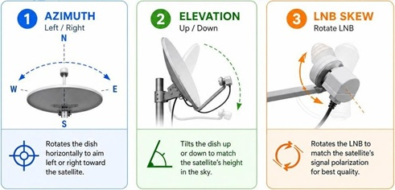

CB (11m band), car, handheld

Old auto radios
CB tricks clone
CB radio mods, schematics, etc.
CB radio mod
(PU=Brazil)4WLG DDS VFO firmware
(VK=Aussie)5TM - DDS signal generator
(VE=Canada)2YDQ DDSVFO Nouvelle version 6.8A
Handheld Radio Support
Handheld Radio programming cable for Baofeng
Radio Programming SW
Radio Programming SW Linux install guide
Failed attempt to use VHF frequency instead of UHF
Baofeng ZT-V68 Programming Software
HamRadioCrashCourse - Why People HATE The BaoFeng Ham Radio! - UV3R
FCC ID certificate search DB
FCC-26-50A1
(233=Romania) call book
11m operator: 233BSD
(233=Romania)BG001 - old content
(YO=Romania)(2=TM)MSB & (233=Romania)TM052 Sorin
Technical publication and general interest documents
Ham radio, operators, theory

The AARL Handbook
ECO Frequency Information System spectrum use in Europe, Romania
AARL HAM radio indicators country
Transmission Methods Reference Document - R&S
IARU - Etica si procedurile de operare ale radioamatorului
International Amateur Radio Union Code of Conduct - all versions
European Communications Office Documentation database
on4ww IARU - Practici de operare
DXPEDITIONING BASICS
Japan Amateur Radio League (JARL) D-STAR Digital Smart Technologies for Amateur Radio - Digitalization Technology Standard for Amateur Radio
(YO=Romania)(8=IS)AZQ Radio Support
(YO=Romania)(8=IS)RCD Blog
(YO=Romania)ANCOM official valid callbook
call book
(YO=Romania)call book
(YO=Romania)call book map
(YO=Romania)call book 2
(YO=Romania)(8=IS)CNA ham radio neighbor #2
(YO=Romania)(8=IS)CNA ham radio neighbor #2
(YO=Romania)(8=IS)BPK ham radio neighbor #1
(YO=Romania)(8=IS)BPK ham radio neighbor #1
(K=US)7AGE - Vintage Tektronix Museum
VintageTEKMuseum
YO DX Club
callsign based statistics
QSO/SWL real time information - (zone KN37)
ITU International Telecommunication Union Radiocommunication Sector
IARU materials - Telecommunication Development Sector
IARU materials - links
(N=US)3AQC North American QRP CW Club
(M=England)0OGY
RADARC
Beacons
Ham Radio news
(YO=Romania)8TFF Florin Tanasa - BRGV-OS, solar, wind, maker
Rob (VK=Australia)8FOES
Florin Tanasa - radio amateur
Jeri Ellsworth - Museum of Radio and Technology
(HB=Switzerland)9BLA Wireless, embedded, maker
AndreasSpiess
- (K=US)E0OG - David Casler - ham radio
- (W=US)T1W - Jim
(K=US)F7P
HamRadioA2Z - (W=US)A2IVD
Temporarily Offline - (K=US)M9G
lionelswl29 SWL
(W=US)8JI
(K=US)9ILL and KD9ILL 1024truck
Radio Examination
A radio amateur entry level examination and license ECCREP089.PDFGrile radiotehnica - examen radioamator
Class IV (Entry class — start), Class III (Novice), Class II and Class I (advanced)
ECCREP089.PDF in romana
(W=US)5YI-VEC - Amateur Radio Volunteer Examiner Coordinator (VEC)
Ham College show into Amateur Radio
AmateurLogic.TV - Amateur Radio & Technology program
Radio Contests
DX Operation Announcements for Forthcoming Ham Radio Contests(W=US)A7BNM Ham Radio Contests Calendar
(SK=Sweden)3BG Contest Software
CW Morse Code
(K=US)9KJ - Learn Morse Code - Lesson 1Morse code by sound
(W=US)B8FSV Morse code by sound
AARL Learning Morse Code
Morse Code (CW) wiki
(VE=Canada)3NEA Morse Runner contest simulator
Learn Morse Code (CW) Online from UBA.BE
RUFZ Listening to Callsigns training software for improving code speed and CW proficiency
(W=US)4ALF Road to CW
(G=England)4FON Koch method trainer
Software defined radio SDR, waterfall, SW
Signals waterfall images - identification guideSDR
SDR projects
SDR SW
FM RDS
Radio Data System (RDS) decoder
(F=FR)6CTE HAM radio SW decoding MultiPSK
WSJT-X (Weak Signal communication by (K=USA)1JT) Qt-based user interface, (G=UK)4WJS
WSJT-X Improved 3.0.0: A new multithreaded FT8 decoder
cemaxecuter7783 - DragonOS linux, SDR
WebSDR, KiwiSDR and OpenWebRX real time monitor of different bands
(YO=Romania)(3=B)KXL SDR onlineSDR online de
(PA=Netherlands)3FWM Web SDR
Kiwi SDR Slanic Prahova
RRI frequencies
Web SDR Uni of Twente Netherlands
Uni of Twente Netherlands ETGD club
(YO=B)(3=B)IVV web SDR Bucharest
web SDR instances
VNA vector network analyzer, Smith chart, antennas
(AE=US)6TY Smith chart - Pacificon presentationNanoVNA - calibration
NanoVNA saver - SW
(W=US)2AEW - nanoVNA, antenna SWR
better: SV6301A / SV4401A VNA
Antenna modelling and comparison
HAM radio antennas tips
(VE=Canada)6SFX VHF comms slot antenna
(W=US)1GHZ Online Microwave Antenna Book
(VE=Canada)6LK amateur
(VA=Canada)3IUL Printed and Microstrip Antennas
Weather, Sun , Aurora forecast, radio propagation
(4X=Israel)4XM - Ham Radio Communications Guide - check resources!Space Weather Prediction Center: SUN, AURORA,
scales legend
propagation predictions
US, Canada propagation
Aurora
solar indices
Australia Geomagnetic Summary
(VE=Canada)3EN solar ham weather
HUXt
space weather
Introduction to HF Radio Propagation
Ionospheric conditions
HF real-time propagation
MUF(max usable freq) propagation map
(N=US)0NBH Understanding propagation related stuff
(G=England)0KYA RSGB (Radio Society of Great Britain) - Understanding HF Propagation
Understanding HF Propagation - R&S Rohde & Schwarz
(VK=Australia)3FS The Ionosphere Explained | How HF Radio Signals Travel Around the World
Earth map
Moon earth side
Satellites, space
Astronomy Picture of the DayNews and ISS track
Space news - summary
Space news - blog science and technology
saveitforparts - satellite content
saveitforparts blog
space weather
Mars Guy - Perseverance rover and Ingenuity helicopter
Receive GOES-16 and GOES-17 Images RPI and RTL-SDR
voacap ?
backyard satellite
NASA
MarsGuy
Satellite TV
lyngsat: HotBird 13F location: 13E is operated by Eutelsat. Satellite operator provides DBW.Eutelsat: RAI 1 channel - satellite - DBW power - antenna size
TV5 mode online
offset antenna install
dish alignment azimuth (198° H:left-right), elevation (34° V:up-down), LNB skew (-12° facing dish and LNB, negative = counterclockwise)
Cosmovisor apk > Settings > Antenna pointing GEO

Linear Parabolic Solar Reflectors
dish antenna - focal point = D*D/16/H
fixedfocus solar - DIY dish
TV
Bow Tie TV AntennaBow Tie TV Antenna
BATCOnline - British Amateur TV Club